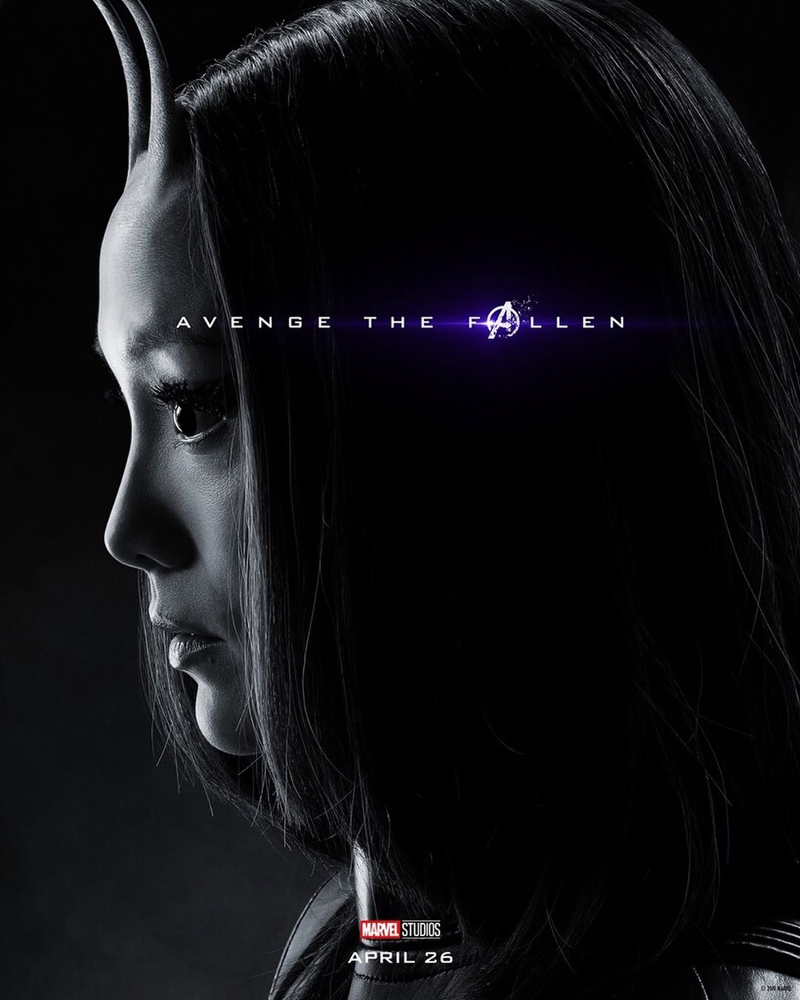

Mantis adalah salah satu tokoh fiksi yang ada pada dunia Marvel. Tokoh ini diciptakan oleh Steve Englehart dan Don Heck. Mantis pertama kali muncul pada komik berjudul Avengers #112 yang diterbitkan pada bulan juni 1973. Pada daftar 100 karakter wanita terseksi versi Comics Buyer’s Guide, Mantis dinobatkan berada di posisi 99. .
Pada komiknya, Mantis digambarkan sebagai seorang wanita berdarah Vietnam-Jerman. Ia lahir di sebuah kota bernama Hue di Vietnam. Ayahnya bernama Gustav Brandt (Libra). Pada saat kecil, Mantis ditinggalkan ayahnya disebuat kuil kuno di Vietnam. Disana ternyata terdapat sebuah kelompok yang memiliki kepercayaan akan adanya sebuah Alien yang diduga merupakan bangsa Kree. Mantis pun dibesarkan oleh kelompok tersebut.
Dalam kelompok sekte Kree tersebut, Mantis belajar bela diri. Namun pada saat ia beranjak dewasa ia malah masuk ke dunia prostitusi di Vietnam. Saat masuk dalam dunia gelap tersebut, Mantis bertemu dengan Swordman yang kemudian mengajaknya bergabung dengan Avengers dengan kekuatan bela diri yang Mantis miliki. Saat bergabung dengan para Avengers, Mantis mendapatkan banyak pengalaman dan berperan penting dalam pertarungan melawan Ultron saat pesta pernikahan Quicksilver dan Crystal.
Sebagai tokoh pahlawan di dunia Marvel, Mantis mendapatkan kekuatan setelah dirinya dilatih bela diri di Vietnam oleh seorang guru bernama Pama. Mantis bahkan mendapat gelar grandmistress karena berhasil menguasai teknik beladiri tingkat tinggi. Selain mampu teknik bela diri, Mantis juga belajar meditasi tingkat tinggi sehingga ia bisa melakukan control atas tubuhnya termasuk menyembuhkan diri dengan cepat.
Mantis mendapat kekuatan baru setelah dirinya bertemu dengan Prime Cocati. Ia diberikan pelajaran tenang mengotrol empati sehingga Mantis kemudian memiliki kemampuan berkomunikasi dengan tumbuhan. Setelah bertualang keluar angkasa dan sempat bertemu dengan kelompok Guardians of the Galaxy, Mantis juga akhirnya mampu memproyeksikan kesadaran tubuhnya sehingga ia bisa berpergian antar planet dengan mentransfer bentuk astral dari dirinya.